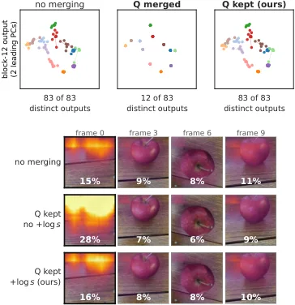
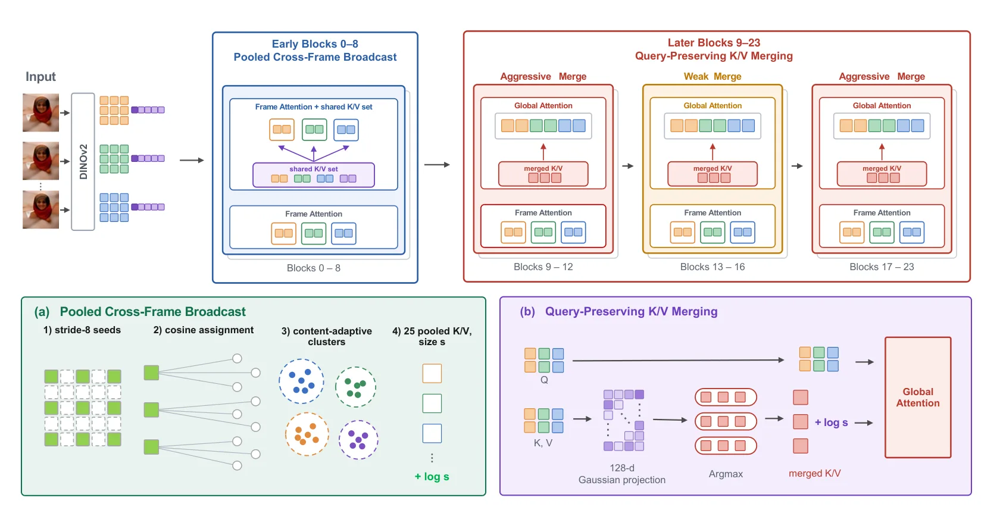
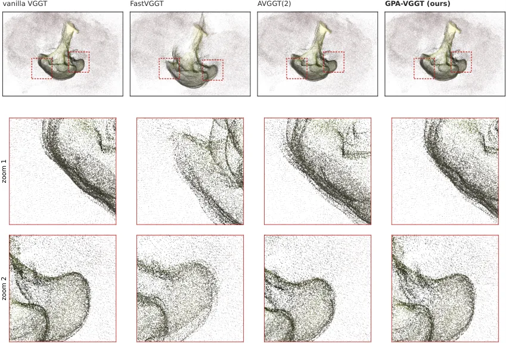
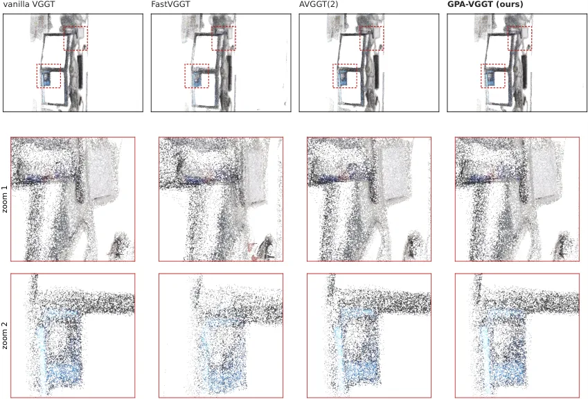
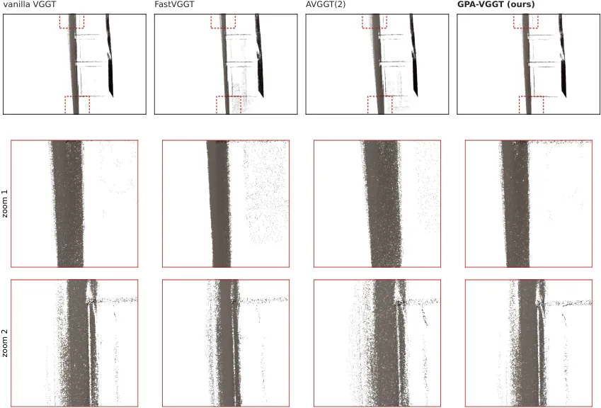
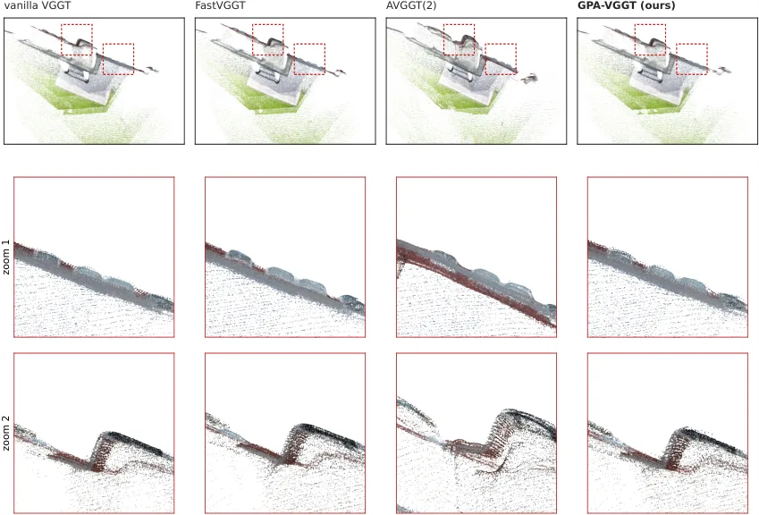

GPA-VGGT：保几何精度的 VGGT 免训练加速
GPA-VGGT: Geometry-Preserving Acceleration of VGGT
先诊断出旧加速法的三处误差来源（合并 query、丢掉 log s 的注意力质量修正、早期块过早去掉跨帧上下文），再逐一补回：CO3D 严格指标 AUC@3 56.94（vanilla VGGT 57.49，FastVGGT 41.56），200 帧 33.65 s vs 86.78 s（2.58×），显存与 vanilla 只差 0.01 GiB。
CO3D AUC@3
speedup at 200 frames
long-sequence AUC@3
peak VRAM delta
作者、单位与技术谱系 · Research context
作者与单位
研究脉络
- VGGT（Wang et al., CVPR 2025）方法基座关系：GPA-VGGT 不训练、不改权重，只重写 VGGT 聚合器（24 层交替帧/全局注意力）的前向计算，全部指标都以 vanilla VGGT 为参照。[论文 §5.1]
- FastVGGT（Shen et al., ICLR 2026）与 ToMe/ToMeSD（Bolya et al.）直接前作/被诊断对象关系：FastVGGT 是把 ToMe 引入 VGGT 的先行工作，本文逐条指出它合并 query、省略 +log s 修正两处问题，并沿用其分组规则与 0.9 合并比，同时借用其 VRAM-efficient VGGT 实现作为 vanilla 基线。[论文 §3.1、§4.1 与附录 B]
- AVGGT（Sun et al., CVPR 2026）同期对照关系：AVGGT 提出把早期全局块换成帧注意力并做均匀网格下采样；本文保留其「早期换帧注意力」的思路，但补上共享跨帧 K/V，并把固定步长下采样改为内容自适应合并。[论文 §3.2 与 §5.1]
合作网络
- Muyeol Sung ↔ Jongwoo Lim（首尔国立大学同单位共同署名）Muyeol Sung → Jongwoo Lim关系：共同署名（同一论文、同一单位）[论文首页署名与致谢]
- GPA-VGGT → VGGT 官方检查点（权重级依赖）GPA-VGGT → VGGT released checkpoint关系：明确技术依赖（同一权重、只改前向）[论文 §5.1 与附录 H]
- GPA-VGGT ↔ FastVGGT / AVGGT（同协议对照）GPA-VGGT → FastVGGT / AVGGT implementations关系：对照复现（同一检查点、同一评测协议）[论文 §5.1 与附录 B]
作者、单位、邮箱与资助编号取自论文首页与致谢，属原文事实；「VGGT 是基座、FastVGGT 是被诊断的前作、AVGGT 是同期对照」由 §3/§4/§5.1 的显式表述支持。原文未标通讯作者，不推断导师或实验室隶属。
方法本质拆解 · What actually changed
是不是微调？
完全不是。所有方法共用 VGGT 官方检查点，不训练、不微调、不蒸馏；GPA-VGGT 只改聚合器的前向计算图，随机投影矩阵是固定高斯矩阵、跨块跨输入共享，也不需要学习。因此它是纯推理期改造，可以按块开关。
有没有额外约束？
约束是结构性的而非损失性的：早期块只能看见「本帧 patch + 全帧 camera/register token + 全帧池化 patch 摘要」三类 key；后期块强制保留全部 query；每个合并 key 必须带 +log s_j 的加性偏置；核心块 13–16 的合并比固定 0.2。这些约束共同保证「合并后的注意力在组内 key 相同时严格等于未合并注意力」这一性质。
推理/后端到底做了什么？
推理时每层做三件事：早期块用帧注意力加共享 K/V 集（该集合每帧相同，可一次构建复用，无需 mask 或逐帧 K/V 拷贝）；中后期块做一次 K/V 匹配（128 维投影下的余弦 argmax）后按组平均 key/value；注意力用自定义 Triton kernel 在 online-softmax 内加 +log s。没有缓存跨帧状态、没有全局 BA、没有测试时优化；匹配 kernel 不落地相似度矩阵，临时显存从 1.20 GiB 降到 0.003 GiB。
方法本质是什么？
本质是把「合并带来的信息损失」拆成可补偿与不可补偿两类：query 合并是不可补偿的（输出被别人替代），所以保留全部 query；K/V 平均是可补偿的（补 log s 即恢复注意力质量），所以放心合并；跨帧上下文是可压缩但不可删除的，所以用低维共享集合代替全量。它改变的是长序列上全局注意力的计算量，没有改变显存峰值（瓶颈在 FFN），也没有改变单帧短序列的表现（10 帧仅 0.84→0.78 s）。
输入与 VGGT 相同的多视图图像与官方权重；把早期块的全局注意力换成帧注意力加共享跨帧 K/V、后期块只合并 K/V 并补 log s、核心块降合并比；直接效果是 200 帧 2.58× 加速而 AUC@3 只掉 0.55 点（CO3D 57.49→56.94）。

结论与问题Conclusion & Motivation
核心结论
GPA-VGGT 的结论是：VGGT 加速掉精度不是「合并 token 必然的代价」，而是三个具体实现缺陷叠加——合并 query 破坏了 token 专属输出、丢掉 +log s 修正使注意力质量偏向首帧、早期块过早换成帧注意力破坏跨视图共享几何参考。逐条补回后，它在 CO3D 十帧上 AUC@3 为 56.94（vanilla 57.49、FastVGGT 41.56、AVGGT(2) 51.87、FasterVGGT 16.05），RE10K 为 44.45（vanilla 44.78）；200 帧时 33.65 s 对 86.78 s（2.58×），500 帧 158.63 s（3.24×）。显存峰值与 vanilla 只差 0.01–0.02 GiB（200 帧 14.38 vs 14.37 GiB），说明它优化的是注意力计算而不是内存。
动机与问题
VGGT 的聚合器在帧注意力（随视图数线性）与全局注意力（随 token 数平方）之间交替，长序列上全局注意力主导时延，这正是它被设计支持的 many-view 场景的瓶颈。已有加速法在 AUC@30 这类宽松阈值下看起来几乎无损，但作者指出宽松阈值主要反映「位姿大致对」，会掩盖对重建仍致命的细粒度误差；换成 AUC@3 后差距立刻显形。他们的诊断实验很具体：把 block 12 的 83 个 token 合并成 12 个槽位后投影到未合并输出场的前两个主成分，query 合并会让组内输出多样性坍缩为零；而不补 +log s 时首帧获得近两倍的注意力质量；早期块换成帧注意力后 block 8 的输出场相对全全局注意力参考偏移 15.5% 半径，且各视图漂移方向的两两余弦均值 −0.09（无共同方向），意味着破坏的是视图间的相对几何而不是整体漂移。
方法Method
方法总览
按块分三段处理。块 0–8：用帧注意力替换全局注意力，但额外拼上一个共享跨帧 K/V 集——所有帧的相机 token 与 4 个 register token，加上内容自适应的池化 patch 摘要（stride-8 种子、按余弦相似度聚类、逐头独立做 cluster-h 平均），摘要同样补 +log s；块 9–23：保留全部 query，只合并 key/value（复杂度从 N×N 降到 N×N_merged），合并比 0.9；块 13–16 是「核心敏感块」，合并比降到 0.2；匹配度量先用固定高斯随机矩阵投影 1024→128 再做余弦 argmax（匹配开销降 7–8×）。实现上写两个 Triton kernel：把 +log s 放进 online-softmax 循环，以及在寄存器里直接算 argmax 而不落地相似度矩阵。
关键技术细节
最具迁移价值的推导是式 (1)：o_i = Σ_j softmax_j(q_iᵀk̄_j/√d + log s_j) v̄_j，当组内 key 完全相同时它严格等于未合并注意力——也就是说 +log s 不是调参技巧，而是「用均值 key 代替 s 个 key」这一近似的正确归一化项。第二个细节是为什么只合并 K/V 仍然划算：复杂度是 N×N_merged 而不是 N_merged×N_merged，多花 N/N_merged 的注意力，换来每个 token 用自己的 query 产出输出，避免了「非代表 token 拿到别人的输出」这种不可事后修正的损失。第三是核心块敏感性：块 13–16 的注意力尖锐地集中在少数跨视图对应 key 上，平均 key 会稀释最相关的那一条，而后续块无法纠正；越靠后的块注意力越弥散、主要指向全局 sink token，合并就安全。

实验Experiments
实验设置
相机位姿：CO3D 与 RealEstate10K，每序列 10 帧，对全部帧对算相对位姿误差，报 AUC@3/5/10/30；长序列用 CO3D 的 64/100/200 帧。点图重建：7-Scenes 与 NRGBD，按 π³ 的稀疏/稠密采样（稀疏为 26 帧/9 序列与 86 帧/18 序列，稠密为 114 与 426 帧），报 accuracy、completeness、normal consistency。硬件单张 RTX A6000（48 GiB）、bf16、PyTorch 2.11 + CUDA 12.8，全部方法共用同一份 VGGT 官方检查点、不训练不微调。对照为 FastVGGT、FasterVGGT、AVGGT(σ=2)、AVGGT(σ=4)；其中 AVGGT 官方代码未公开，作者按论文规格自行复现，因此绝对值不与原论文可比。
实验数字与比较
Table 2（CO3D，64/100/200 帧 AUC@3）：vanilla 62.57/62.45/61.47，GPA 62.61/62.55/61.43，AVGGT(2) 58.49/58.59/57.71，FastVGGT 55.18/55.97/56.28，FasterVGGT 20.66/20.40/19.59——GPA 的长序列衰减与 vanilla 同步，AVGGT(2) 在 200 帧掉 3.76 点。Table 1（10 帧）：CO3D AUC@3 57.49→56.94、AUC@30 91.71→91.57；RE10K 44.78→44.45、85.76→85.54，而 FastVGGT 在 RE10K AUC@3 只有 37.56。Table 4（端到端时延）：200 帧 86.78 s→33.65 s（2.58×），500 帧 513.78 s→158.63 s（3.24×），此时 AVGGT(4) 111.74 s（4.60×）更快但精度代价大；10 帧 0.84→0.78 s，几乎无收益。Table 3（点图）：NRGBD 稀疏 Acc 0.0414 / Comp 0.0476 / NC 0.8941，vanilla 为 0.0510 / 0.0665 / 0.8843（GPA 在稀疏 NRGBD 上三项都优于 vanilla）；7-Scenes 稠密 0.0204 / 0.0253 / 0.6674，vanilla 0.0215 / 0.0259 / 0.6673。
消融/失败边界
Table 5 是逐级加组件的消融（200 帧时延 / CO3D AUC@3 / RE10K AUC@3）：vanilla 86.8 s / 57.49 / 44.78；只把早期块换成帧注意力 59.1 s / 54.43 / 44.45（省 27.7 s 但掉 3.06 点）；加池化跨帧广播 59.8 s / 57.25 / 45.20（回收 2.82 点，代价 0.7 s）；加 query 保留的 K/V 合并（块 9–12、17–23）40.1 s / 57.13 / 44.45；加随机投影匹配 35.5 s / 57.12 / 44.47；加核心块敏感合并 33.6 s / 56.94 / 44.45。这组数字清楚地把「精度」和「速度」分到不同组件上：跨帧广播负责精度，K/V 合并负责主要加速，最后两步只花 0.05–0.02 点换 6.5 s。边界：500 帧只报时延不报精度，无法确认极长序列的 AUC@3 是否仍守得住；AVGGT 是自行复现，绝对数不可比；显存峰值由未改动的 FFN 决定，因此它没有解决 OOM（FasterVGGT 在 500 帧 OOM 是它自己的问题）；所有实验在单张 A6000、bf16 下完成，未报 batch 或并发下的时延波动。
局限与迁移Limitations & Transfer
局限与待核验
作者未单列 Limitations 章节，但从正文可确认三点边界：一是精度只在 64/100/200 帧上验证，500 帧只有时延；二是 AVGGT 没有官方代码，作者自行复现，因此「与 AVGGT 谁更准」只能在作者自己的实现下成立；三是方法只改注意力，显存峰值不变（200 帧 14.38 vs 14.37 GiB），长序列的真正内存瓶颈仍在 FFN。我们要补的核验点：第一，merge ratio 0.9 与核心块 0.2 是在 CO3D/RE10K 上调的，换到室内 SLAM 序列（低重叠、弱纹理）是否需要重调未知；第二，随机投影只用于 argmax 选目标，理论上「近并列候选」会被重排，文中说不会产生根本不同的分组，但没有给出重排率统计；第三，AUC@3 是位姿指标，下游 3DGS/建图质量未测，而加速后 token 合并可能改变深度边缘；第四，是否与 VGGT-Ω/π³ 的官方实现逐位一致（附录 H 称 2.36×/1.84×）需独立复跑。
与你研究路线的关系
如果我们的在线前端以 VGGT/π³ 系列为几何骨干，这篇几乎是「免费」的性能预算：免训练、可插拔，三条修正（保留 query、补 +log s、早期块保留共享跨帧 K/V）都能直接落到我们自己的注意力实现里，不需要重训。可迁移的判断规则也很实用：先看块级注意力是否尖锐，尖锐的块（本文 13–16）必须低合并比，弥散的块可以高合并比——这个准则比「统一合并比」更稳。另一条更重要的方法论启示是评价指标：宽松阈值（AUC@30）会把 16 点的 AUC@3 退化掩盖成 2.6 点，我们以后报任何加速/稀疏化结果，都该同时给出严格阈值与下游几何误差，而不是只报宽松 AUC 与 FPS。下一步实验：在我们自己的骨干上复现 Table 5 的逐级消融（先只换早期块、再加共享 K/V、再加 K/V 合并），并在同一段真实序列上同时测 AUC@3、点图 Acc/Comp 与端到端时延；若时间允许，补一个 300–500 帧的精度点，确认长序列是否仍守 99%。







